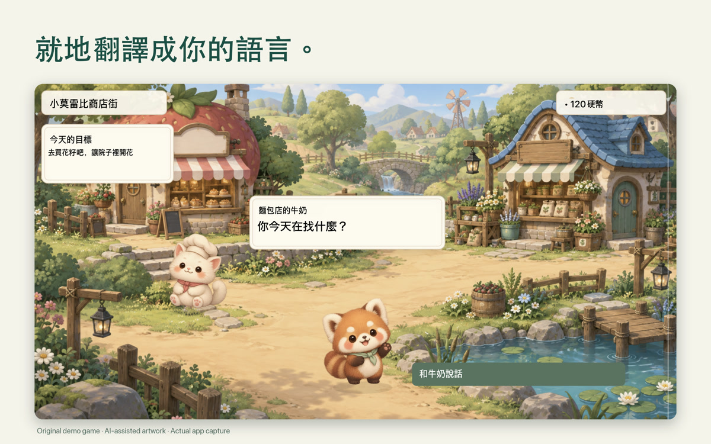
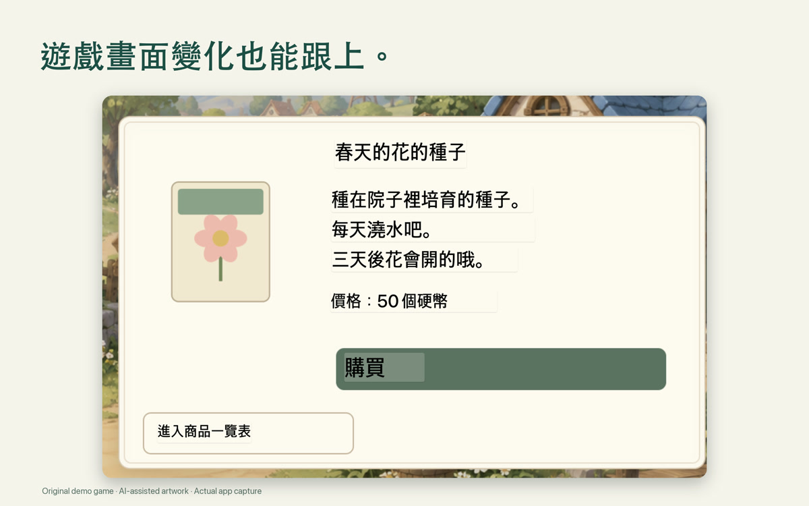
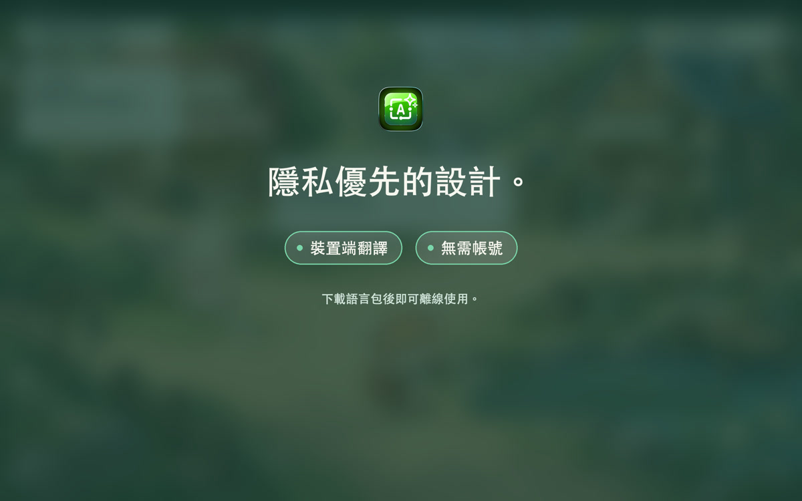

在原處閱讀
直接在遊戲畫面上閱讀翻譯後的對話。
Mac 螢幕翻譯
選取遊戲、圖片或文件中的文字，在原來的位置閱讀翻譯。
一次購買 · 無需訂閱
請在 App Store 查看您所在地區的目前價格。
macOS 15+ · 支援 Apple 晶片與 Intel · 需要螢幕錄製權限。下載語言包後即可離線使用。 設定與相容性說明
框選想閱讀的螢幕文字。
在原來的視窗上閱讀翻譯。
觀看影片或玩遊戲時，翻譯變化的螢幕文字。

直接在遊戲畫面上閱讀翻譯後的對話。

在原來的位置閱讀對話與螢幕文字。

裝置端翻譯，無需帳號。下載語言包後即可離線使用。
ViewLingo 讀取的是螢幕上看得到的文字，而不是語音。語言清單直接來自 macOS，語言包下載一次後即可離線翻譯。
像在 Mac 上那樣，在文章上拖出一個取景器。
此範例用於說明操作方式，不會執行實際翻譯引擎。
ViewLingo 支援您的 Mac 上Apple 文字辨識（OCR）和翻譯共同支援的語言。可用語言取決於 macOS 版本。
ViewLingo 會引導你把每個語言包下載一次（也可以在系統設定 › 一般 › 語言與地區 › 翻譯語言中管理）。之後翻譯完全離線運作。
您的 Mac 上可用的確切清單可在 ViewLingo 設定中查看，應用程式會直接從 macOS 讀取。
按下 fn + Control + Option，框選螢幕上的任何文字：遊戲、影片、網頁、文件或 App。移動或調整取景器，翻譯隨之更新。
緊跟影片字幕、遊戲、簡報和直播中不斷變化的文字；畫面不變時，譯文穩穩停留。
凡是 Mac 的文字辨識與 Apple 翻譯共同支援的語言都能使用，語言清單隨 macOS 一起擴充。
無需將螢幕傳送到伺服器。翻譯在您的 Mac 上本機處理。
譯文直接覆蓋在原文上，貼合原有的版面與配色。不必複製，也不必切換 App。
辨識並翻譯日文、中文、韓文的直排文字，從漫畫對白到街頭招牌都難不倒。
翻譯文字比原文長時自動調整字型大小，確保可讀性。
Live、重試和關閉按鈕位於選取範圍外側，絕不會遮住你正在閱讀的文字。
您的內容不會離開您的Mac。所有翻譯均透過Apple內建翻譯引擎在裝置上完成。
下載所需語言包後，無需連網即可在 Mac 上翻譯。
不需帳號，沒有分析，沒有追蹤。我們從不接收您的螢幕內容或譯文，翻譯紀錄只保存在您的 Mac 上。
使用裝置內的 Apple 翻譯引擎。可用語言取決於您的 Mac。
可在 Mac App Store 下載。
選取遊戲、圖片或文件中的文字，在原來的位置閱讀翻譯。
請在 App Store 查看您所在地區的目前價格。
macOS 15 或更新版本 · 支援 Apple 晶片與 Intel